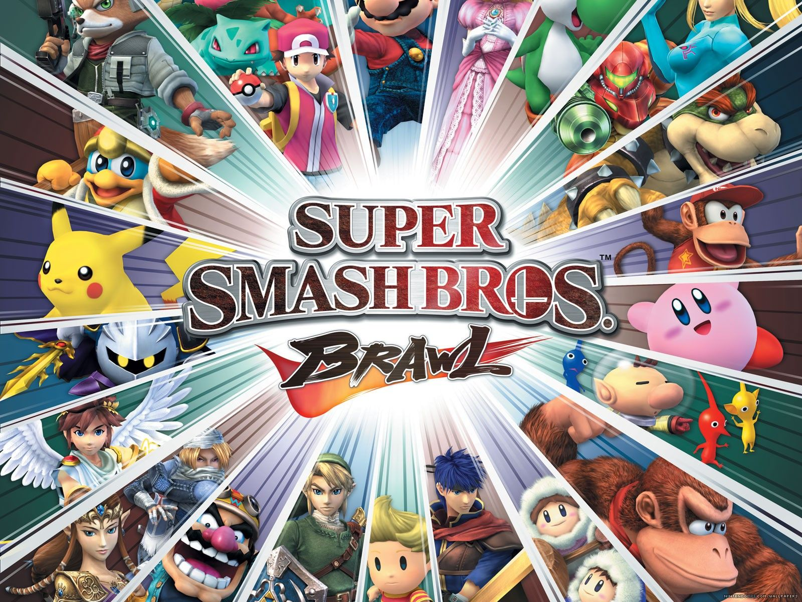

Super Smash Bros es una saga de videojuegos de lucha desarrollada por Nintendo. A diferencia de otros juegos de pelea tradicionales, este título reúne personajes de múltiples franquicias de Nintendo (y otras compañías), permitiendo enfrentamientos únicos y caóticos en escenarios inspirados en sus respectivos mundos.

Características principales del juego:
Elige entre más de 80 personajes jugables como Mario, Link, Pikachu, Kirby, Donkey Kong, y muchos más.
Combates multijugador hasta para 8 jugadores en el mismo escenario.
Escenarios dinámicos con objetos, trampas y mecánicas únicas.
Modos variados: lucha libre, torneo, aventura, entrenamiento, y online.
Ideal para jugar tanto de forma casual como competitiva.
Super Smash Bros ha sido aclamado por su jugabilidad accesible, su profundidad estratégica y por reunir en un solo juego a los personajes más icónicos de los videojuegos.